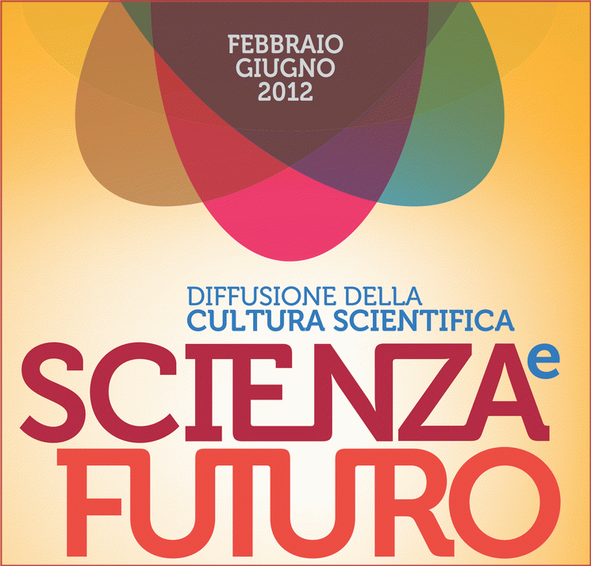

You are hereNews
News
Le ultime notizie di PalermoScienza
Olimpiadi di matematica. Gli studenti siciliani si allenano
Al via lo stage olimpico per gli alunni selezionati per la gara nazionale
Il corso di potenziamento si svolgerà a Enna, il 29, 30 e 31 marzo al Liceo Farinato Continua ScienzaeFuturo, il progetto regionale di diffusione della cultura scientifica
I “nipotini di Pitagora” sono pronti a entrare in gara. Per il primo anno anche la Sicilia si prepara con uno stage di potenziamento regionale alle Olimpiadi della matematica. Giovedì, 29 marzo, prende il via a Enna lo “stage olimpico”, un corso di potenziamento di matematica, propedeutico alla gara nazionale, rivolto a 18 alunni “cervelloni” delle nove province siciliane che sono stati selezionati per partecipare alla fase nazionale della XXVIII edizione delle Olimpiadi della matematica a Cesenatico dal 3 al 6 maggio. Ai 18 finalisti se ne aggiungeranno altri 9, uno per provincia, ben piazzati nelle graduatorie provinciali, fortemente motivati, da allenare per il prossimo anno. Lo stage olimpico si svolgerà nei locali del Liceo scientifico “Pietro Farinato”, messi a disposizione dal dirigente scolastico Anna Luigia Marmo e durerà tre giorni (29, 30 e 31 marzo). Il corso di “allenamento” si inserisce nell’ambito delle iniziative di “Scienza e Futuro”, un progetto di diffusione della cultura scientifica, finanziato dall’assessorato regionale all’Istruzione e alla formazione professionale, coordinato dall’Istituto comprensivo “Michelangelo Buonarroti” di Palermo e realizzato dal CNR e da “PALERMOSCIENZA”, l’associazione in prima linea nell’organizzazione dello stage olimpico. Giovedì 29 e venerdì 30 gli alunni si alleneranno per sei ore, tra mattina e pomeriggio. Sabato mattina per altre tre. Gli studenti “armati” soltanto di carta e penna – non potranno usare calcolatrici – utilizzando intuito, logica, genialità e fantasia, dovranno rispondere a una serie di domande di aritmetica, geometria, combinatoria e algebra. Ad animare lo stage saranno Samuele Mongodi e Marco Golla, anche loro “atleti” olimpici di qualche anno fa e attualmente membri dello staff organizzativo delle Olimpiadi nazionali. Con competenza e “leggerezza” guideranno gli studenti, indicando loro gli approcci metodologici e le strategie risolutive per affrontare i quesiti. Appuntamento, quello delle Olimpiadi nazionali di Cesenatico, al quale parteciperanno 300 studenti provenienti da tutta Italia. Qui verranno selezionati i 10 migliori alunni che formeranno la squadra italiana che concorrerà alle Olimpiadi internazionali, in Argentina dal 4 al 12 luglio. Soddisfatto dell’iniziativa è Carmelo Arena, socio fondatore di PALERMOSCIENZA: “Per il primo anno anche in Sicilia ci prepariamo per le Olimpiadi con un corso di potenziamento. Un modo per arrivare ancora più preparati a Cesenatico. Alle Olimpiadi nazionali gli studenti siciliani si sono sempre distinti. L’anno scorso al secondo posto si è classificato proprio un alunno del liceo Farinato di Enna, Giovanni Barbarino, oggi studente della Scuola Normale Superiore. La mission della nostra associazione, che fa propri i principi dell’Unione matematica italiana (Umi), è quella di rendere visibili al mondo che sta al di fuori dalla comunità dei matematici la natura e le funzioni di questa scienza, dimostrando che la matematica, sia pura che applicata, è una delle chiavi dello sviluppo”.
NdR: il testo di questo articolo è a cura dell'Ufficio stampa Futurantica
Esperienza inSegna 2012: i volti raccontano
Questa pillola nasce dal personalissimo piacere di rivedere un pò di quei visi, più o meno noti, che ho incontrato per nove giorni consecutivi, girando per gli ampi spazi del Polididattico e dal desiderio di ringraziare chi ha contribuito al successo della quinta edizione di Esperienza inSegna.
Buona visone e alla prossima... Esperienza!
Annalisa Conte
Esperienza inSegna in pillole, 04-03-2012
Eccoci giunti alla pillola dell'ultima giornata di Esperienza inSegna 2012 che per l'occasione si sdoppia! La giornata finale è stata scandita dai numerosi laboratori - Gioco-imparo, Fare per capire e MatLab creati dall'associazione PALERMOSCIENZA, i laboratori sulla scienza in cucina a cura di InnovIdea, il laboratorio Prego passi lei. Problemi classici della programmazione concorrente a cura di Fulvio Valenza - e dall'ultima rappresentazione dello spettacolo Pseudo Pitagora a cura di Gloria Calì e con la partecipazione dei bravissimi ragazzi della scuola secondaria di 1° grado "Cosmo Guastella" di Misilmeri.
La manifestazione si è conclusa con la consegna degli attestati, ultimo seguitissimo appuntamento in calendario che ha visto l'intervento di Pietro Vazzana, Assessore provinciale alla Pubblica Istruzione.
Esperienza inSegna in pillole, 03-03-2012
L'ottava giornata di Esperienza inSegna 2012 è caratterizzata dal workshop SCIENZAeFUTURO - Diffusione della cultura scientifica, presentazione del progetto regionale introdotta e coordinata da Maria Michela Settineri, con gli interventi di Anna Buttafuoco, Giovanni Viegi ed Emilio Balzano.
Tra i laboratori: "Ombre matematiche. Laboratorio di gnomonica" a cura di Marisa Tuscano, Una zuppa di numeri: giochi di matematica in cucina tra ricette, frazioni, ingredienti e percentuali a cura di InnovIdea e a conclusione dell'intensa giornata, per la seconda serata consecutiva, le osservazioni notturne del cielo a cura di Specula Panormitana.
Esperienza inSegna in pillole, 02-03-2012
La mattina della settima giornata di Esperienza inSegna 2012 comincia con la visita guidata Tesori a portata di mano - presso l'Istituto Tecnico "Francesco Crispi" di Palermo - di una ricca e meravigliosa collezione di strumenti scientifici rappresentativi di varie discipline (matematica, fisica nei suoi vari settori, chimica, merceologia, geologia, botanica, zoologia e anatomia). Nel frattempo al Polididattico le attività continuano a fervere: laboratori, esperimenti, spettacoli, e il workshop della giornata Immaginarsi imprenditori a cura di ARCA, con la partecipazione di Umberto La Commare – I giovani vanno incontro a un futuro diverso – e Creatività e impresa di Fabio Montagnino, per finire con Testimonianza di imprese dell'incubatore ARCA. La serata si conclude con le Osservazioni notturne del cielo a cura di INAF-OAPA, Specula Panormitana, presso le Terrazze delle Cavallerizze.
A domani!
Esperienza inSegna in pillole, 01-03-2012
Eccoci alla sesta pillola di Esperienza inSegna 2012!
Tra i vari appuntamenti di oggi: il Il laboratorio di matematica: insegnanti, studenti e macchine tenuta dal professore Carmelo Arena, proseguito nel workshop pomeridiano che ha visto anche la partecipazione della profesoressa Cinzia Cerroni; la visita guidata al Laboratorio del Dipartimento di Idraulica dell'Università di Palermo sul tema L'ingegneria per gli impieghi dell'acqua e la tutela di fiumi e laghi; il laboratorio MatLab, il laboratorio Gioco-imparo, exhibit, workshop...
ScienzaeFuturo, un progetto di diffusione della cultura scientifica
Gli studenti siciliani bocciati in matematica
La Regione corre ai ripari. Domani alle 10,30 al Polididattico la presentazione dei dati
Il punteggio medio conseguito dai quindicenni delle scuole siciliane in matematica è al di sotto della media nazionale e di quella Ocse. Un paradosso, se si considera che già nel 1884 Palermo vide la nascita del Circolo Matematico più antico d’Italia. Per superare il gap la Regione corre ai ripari con ScienzaeFuturo, un progetto di diffusione della cultura scientifica, che coinvolgerà decine di scuole. L’iniziativa verrà presentata alla stampa.
Domani, sabato 3 marzo
Alle 10,30
Al Polididattico (edificio 19)
Viale delle Scienze
Al workshop, coordinato da Maria Michela Settineri, dirigente scolastico dell’Istituto comprensivo “Michelangelo Buonarroti”, parteciperanno i rappresentanti di tutte le istituzioni coinvolte. Interverranno Anna Buttafuoco, dirigente regionale del servizio Istruzione statale, Maria Luisa Altomonte, direttore generale dell’Ufficio scolastico regionale per la Sicilia, Giovanni Viegi, direttore dell’Istituto di Biomedicina e Immunologia molecolare (Ibim - Cnr) ed Emilio Balzano, docente di Fisica all’Università Federico II di Napoli.

Esperienza inSegna in pillole, 29-02-2012
Oggi senza parole; buona visione!
Esperienza inSegna in pillole, 28-02-2012
La mattina del quarto giorno inizia con la visione del documentario Inside the light. The Mistery of Light in Quantum Physics a cura di Massimo Palma, Dipartimento di Fisica dell'Università di Palermo e prosegue tra visite, laboratori e la scoperta graduale dei numerosissimi exhibit esposti.
A domani!
Esperienza inSegna in pillole, 27-02-2012
La terza pillola di Esperienza inSegna 2012 è dedicata in larga parte ad "Africa: terra, vita, cielo...": un progetto per l'integrazione delle diversità. Alla scoperta del continente africano attraverso l'astronomia, la chimica, la geologia e la matematica.
Il progetto, ideato dall'associazione PALERMOSCIENZA e patrocinato dall'Assessorato Istruzione e Formazione Professionale della Regione Siciliana, ha coinvolto gli studenti degli istituti comprensivi "Torretta" (Torretta) e "Cruillas" (Palermo) e delle scuole medie "Privitera" (Partinico) e "Lanza-Pavone" (Valguarnera).
Gli studenti, in questa giornata particolare, hanno presentato gli exhibit costruiti durante il progetto con fantasia, ottima manualità e utilizzando del semplice materiale povero. Altro appuntamento di grande interesse è stata la seguitissima conferenza-spettacolo tenuta da Luigi Dei, con il patrocinio dell'Istituto polacco – Roma, dedicata a Maria Salomee Sklodowska Curie: l'ostinata abnegazione di un genio.
Buona visione!